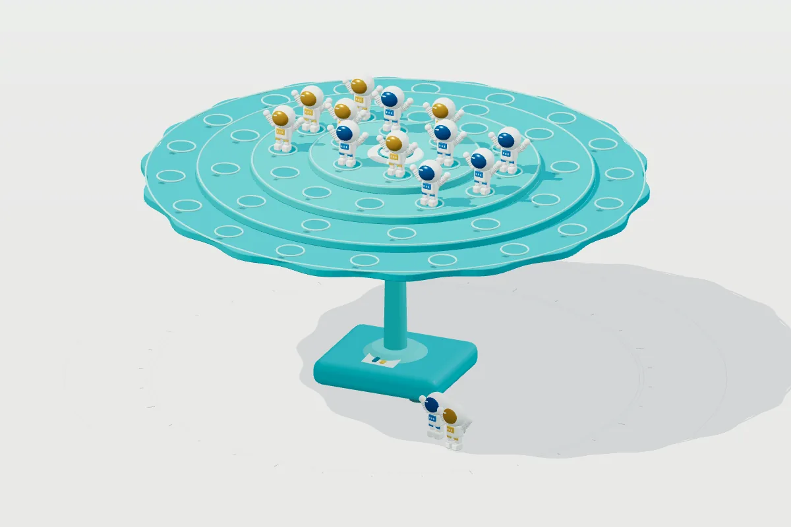

平衡太空人
免费在线玩平衡太空人：轮流将太空人放上平衡平台，别让队员掉下去。真实刚体模拟，支持 2 至 4 人同屏对战和电脑对手，提供轮流放置、骰子挑战及趣味转盘，手机、平板、电脑打开即玩。
2–4 人同屏游玩，约 3–8 分钟一局。

玩法
- 从空盘开局，四圈由内向外逐级降低，共有 48 个停靠位。
- 轮流放置模式每回合放 1 位；骰子挑战按 1 至 6 点逐一放置。每次放置最多观察 8 秒，提前稳定或超时无人倒下就继续；暂停期间不计时。
- 队员倒下或滑落时，最后放置的玩家失败，其余玩家获胜；48 个停靠位全部完成观察且无人倒下则全员共同获胜。
- 支持 2 至 4 支队伍，每队可切换真人或机器人，结算后可玩趣味转盘。
适合喜欢平衡玩具、观察平台摇晃，或想与家人朋友轮流挑战手感和判断力的玩家。